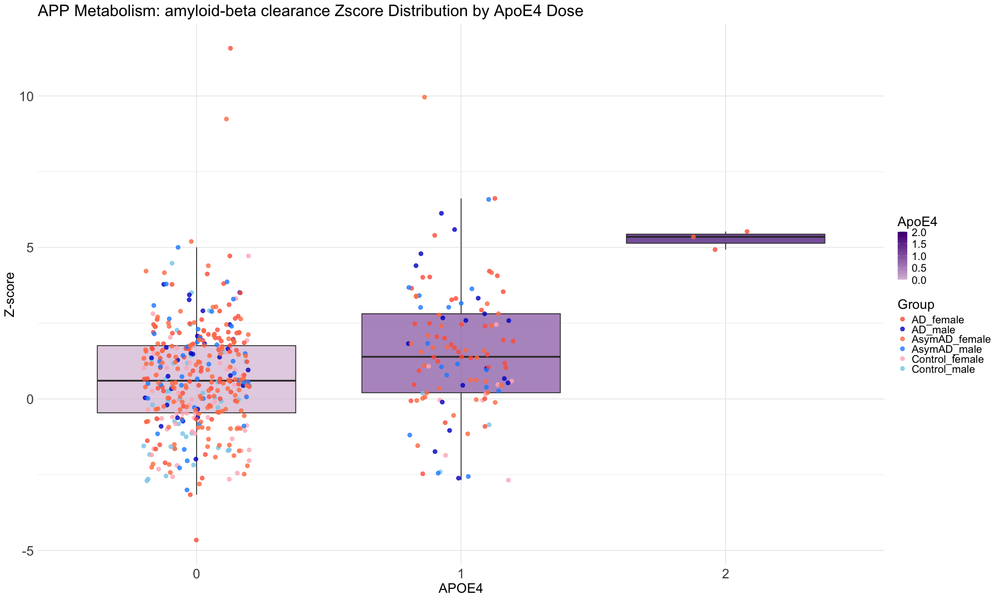
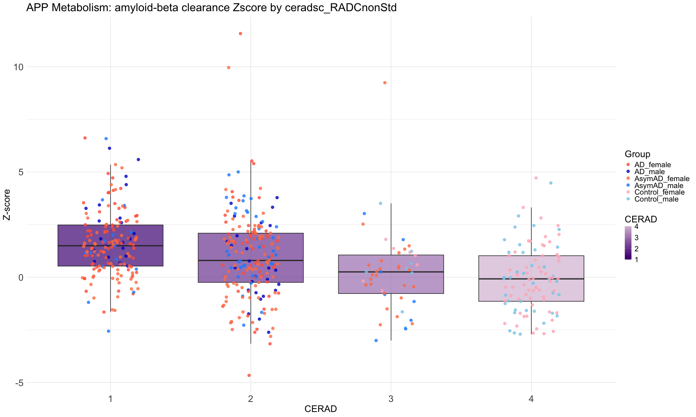
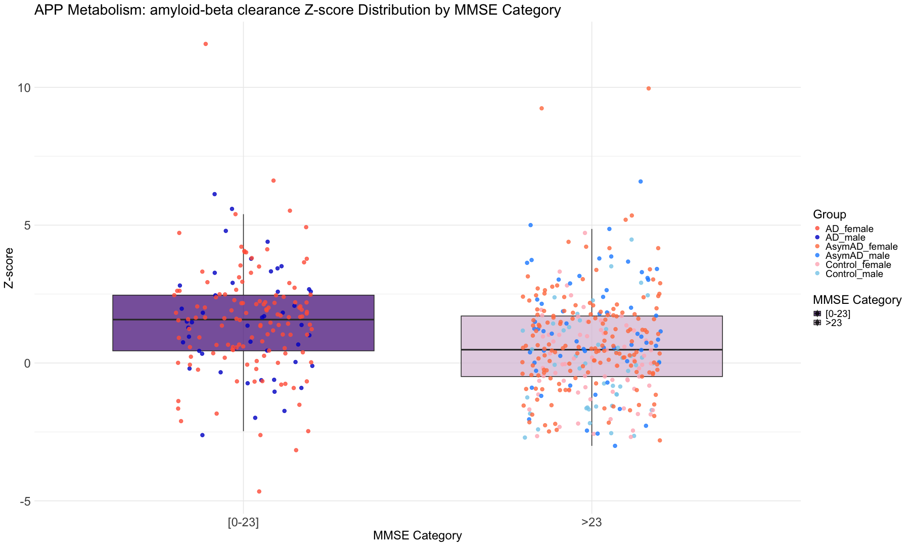

library(ggplot2) library(dplyr) library(viridis) library(ggpubr) theme_set(theme_pubr()) # Merge CT, AD and AsymAD specific Z scores and clinical parameters altogether merged_data_CTADAsymAD <- Subdomain_zscore_CTADAsymAD %>% inner_join(sample_data_DLPFC_CTADAsymAD %>% select(batch.channel, ApoE4.Dose, braaksc, ceradsc_RADCnonStd, cts_mmse30_lv, cts_mmse30_cat, JohnsonDx, sex), by = c("Sample_ID" = "batch.channel")) %>% mutate(Group = paste(JohnsonDx, sex, sep = "_")) # Combine JohnsonDx and sex dim(merged_data_CTADAsymAD)
## [1] 508 137
write.table(merged_data_CTADAsymAD, "merged_data_CTADAsymAD.txt", sep = "\t", quote = FALSE, row.names = FALSE) #head(merged_data_CTADAsymAD) ################################################################################################################################################## # Define custom colors for each group group_colors <- c("AD_male" = "mediumblue", "AD_female" = "tomato", "AsymAD_male" = "dodgerblue", "AsymAD_female" = "coral", "Control_male" = "skyblue", "Control_female" = "lightpink") # Calculate 1st and 99th percentile from CT_male and CT_female #ct_values <- merged_data_CTADAsymAD %>% #filter(Group %in% c("CT_male", "CT_female")) %>% #pull(AM_ac_4_Zscore) #percentile_1 <- quantile(ct_values, probs = 0.01, na.rm = TRUE) # 1st percentile #percentile_99 <- quantile(ct_values, probs = 0.99, na.rm = TRUE) # 99th percentile # Create the box plot for Braak Stage ggplot(merged_data_CTADAsymAD, aes(x = factor(braaksc), y = AM_ac_4_Zscore, fill = as.numeric(braaksc))) + geom_boxplot(outlier.shape = NA, alpha = 0.7) + # Box plot with transparent fill geom_jitter(aes(color = Group), width = 0.2, size = 3, alpha = 0.8) + # Jittered points #geom_hline(yintercept = percentile_1, linetype = "dashed", color = "black", size = 1) + # 1st percentile line #geom_hline(yintercept = percentile_99, linetype = "dashed", color = "black", size = 1) + # 99th percentile line scale_color_manual(values = group_colors) + # Assign custom colors to Group scale_fill_gradient(low = "#D8BFD8", high = "#4B0082", guide = guide_colorbar(title = "Braak")) + # Purple gradient + labs(title = "APP Metabolism: amyloid-beta clearance Zscore Distribution by Braak Stage", x = "BRAAK", y = "Z-score", color = "Group", fill = "BRAAK") + theme_minimal(base_size = 16) + theme( text = element_text(size = 24), axis.text.x = element_text(size = 24), axis.text.y = element_text(size = 24), axis.title = element_text(size = 24), legend.position = "right" )

################################################################################ # Fit a Linear Model (Numeric BRAAK as Continuous Proxy) lm_model <- lm(AM_ac_4_Zscore ~ as.numeric(braaksc), data = merged_data_CTADAsymAD) summary(lm_model)
## ## Call: ## lm(formula = AM_ac_4_Zscore ~ as.numeric(braaksc), data = merged_data_CTADAsymAD) ## ## Residuals: ## Min 1Q Median 3Q Max ## -5.2396 -1.1840 -0.0376 0.9991 10.9946 ## ## Coefficients: ## Estimate Std. Error t value Pr(>|t|) ## (Intercept) -0.96475 0.26481 -3.643 0.000297 *** ## as.numeric(braaksc) 0.51475 0.06871 7.492 3.05e-13 *** ## --- ## Signif. codes: 0 '***' 0.001 '**' 0.01 '*' 0.05 '.' 0.1 ' ' 1 ## ## Residual standard error: 1.826 on 506 degrees of freedom ## Multiple R-squared: 0.09985, Adjusted R-squared: 0.09807 ## F-statistic: 56.13 on 1 and 506 DF, p-value: 3.05e-13
# To get the correlation coefficient from R² #sqrt(0.09614) # ≈ 0.310 #Since the slope is positive, the correlation is: # correlation ≈ 0.310 ################################################################################ # Create the box plot for ApoE4.Dose Stage ggplot( merged_data_CTADAsymAD %>% filter(!is.na(ApoE4.Dose)), # ⬅️ Exclude NA ApoE4.Dose aes(x = factor(ApoE4.Dose), y = AM_ac_4_Zscore, fill = as.numeric(ApoE4.Dose))) + geom_boxplot(outlier.shape = NA, alpha = 0.7) + # Box plot with transparent fill geom_jitter(aes(color = Group), width = 0.2, size = 3, alpha = 0.8) + # Jittered points #geom_hline(yintercept = percentile_1, linetype = "dashed", color = "black", size = 1) + # 1st percentile line #geom_hline(yintercept = percentile_99, linetype = "dashed", color = "black", size = 1) + # 99th percentile line scale_color_manual(values = group_colors) + # Assign custom colors to Group scale_fill_gradient(low = "#D8BFD8", high = "#4B0082", guide = guide_colorbar(title = "ApoE4")) + # Purple gradient + labs(title = "APP Metabolism: amyloid-beta clearance Zscore Distribution by ApoE4 Dose", x = "APOE4", y = "Z-score", color = "Group", fill = "ApoE4") + theme_minimal(base_size = 16) + theme( text = element_text(size = 24), axis.text.x = element_text(size = 24), axis.text.y = element_text(size = 24), axis.title = element_text(size = 24), legend.position = "right" )

################################################################################ # Create the box plot for ceradsc_RADCnonStd ggplot(merged_data_CTADAsymAD, aes(x = factor(ceradsc_RADCnonStd), y = AM_ac_4_Zscore, fill = as.numeric(ceradsc_RADCnonStd))) + geom_boxplot(outlier.shape = NA, alpha = 0.7) + # Box plot with transparent fill geom_jitter(aes(color = Group), width = 0.2, size = 3, alpha = 0.8) + # Jittered points #geom_hline(yintercept = percentile_1, linetype = "dashed", color = "black", size = 1) + # 1st percentile line #geom_hline(yintercept = percentile_99, linetype = "dashed", color = "black", size = 1) + # 99th percentile line scale_color_manual(values = group_colors) + # Assign custom colors to Group scale_fill_gradient(high = "#D8BFD8", low = "#4B0082", guide = guide_colorbar(title = "CERAD")) + # Purple gradient + labs(title = "APP Metabolism: amyloid-beta clearance Zscore by ceradsc_RADCnonStd", x = "CERAD", y = "Z-score", color = "Group", fill = "CERAD") + theme_minimal(base_size = 16) + theme( text = element_text(size = 24), axis.text.x = element_text(size = 24), axis.text.y = element_text(size = 24), axis.title = element_text(size = 24), legend.position = "right" )

################################################################################ # Step 1: Rename only selected Metadata values, leave others unchanged merged_data_CTADAsymAD$cts_mmse30_cat <- recode(merged_data_CTADAsymAD$cts_mmse30_cat, "0" = "[0-23]", "1" = ">23" ) # Define fill colors using the recoded levels fill_colors <- c("[0-23]" = "#4B0082", ">23" = "#D8BFD8") ggplot(merged_data_CTADAsymAD, aes(x = factor(cts_mmse30_cat), y = AM_ac_4_Zscore, fill = cts_mmse30_cat)) + geom_boxplot(outlier.shape = NA, alpha = 0.7) + geom_jitter(aes(color = Group), width = 0.2, size = 3, alpha = 0.8) + scale_color_manual(values = group_colors) + scale_fill_manual(values = fill_colors, name = "MMSE Category") + labs( title = "APP Metabolism: amyloid-beta clearance Z-score Distribution by MMSE Category", x = "MMSE Category", y = "Z-score", color = "Group" ) + theme_minimal(base_size = 16) + theme( text = element_text(size = 24), axis.text.x = element_text(size = 24), axis.text.y = element_text(size = 24), axis.title = element_text(size = 24), legend.position = "right" )

################################################################################ # Prepare figures for manuscript #ggarrange(P2, P3, P4, P5, #labels = c("B", "C", "D", "E"), #font.label = list(size = 20)) # Adjust size as needed ################################################################################################################################################## ##################################################################################################################################################